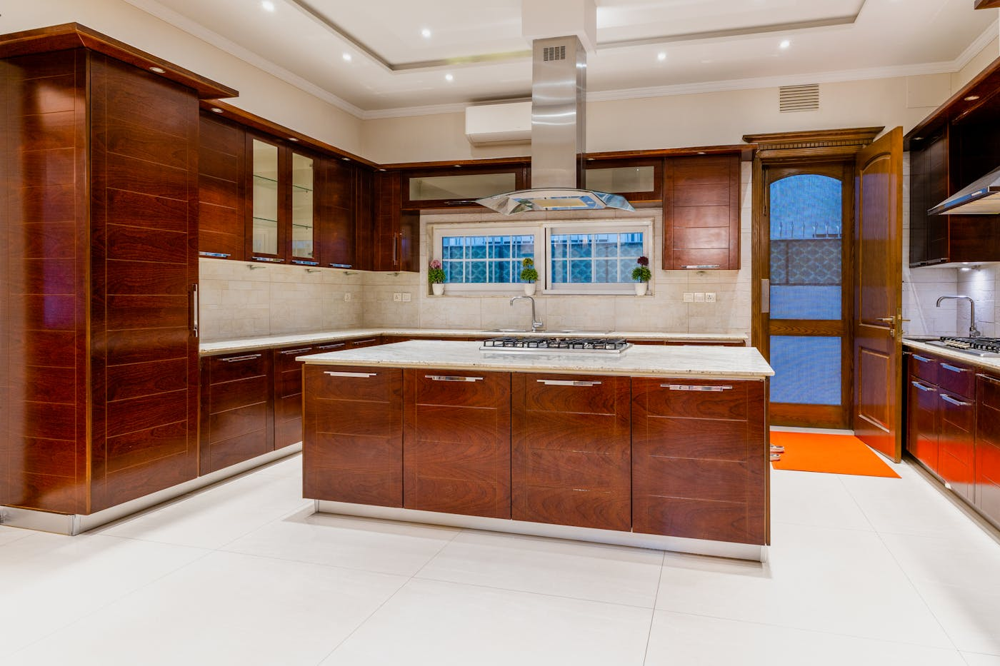
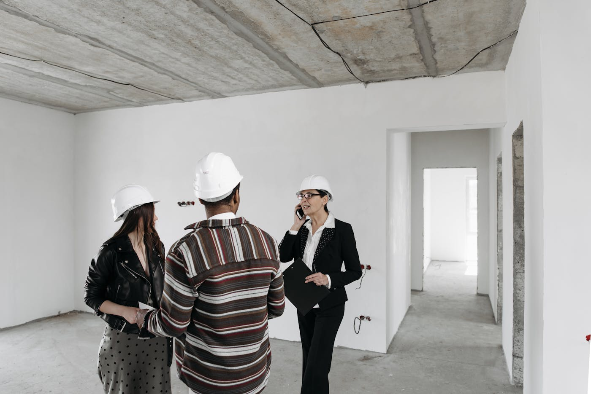

Quick answer: In Sydney, a $300,000 construction budget covers approximately 136–167 m² at entry-level finishes — roughly a small 3-bedroom single-storey home on a flat, straightforward block. That figure covers the building works only. Land, site preparation, design fees, council contributions, and landscaping add another $100,000–$250,000 or more to most Sydney builds. A complete new home project in metro Sydney typically starts at $450,000–$600,000 all-in, excluding land purchase. Genuinely sub-$300k builds do exist in NSW — granny flats, small project homes in outer-growth corridors, and modular homes — but they require specific site conditions and a volume builder, not a custom one.
“Budget” in Australian home building operates like “low fat” on a food label — technically defined, widely applied, and occasionally connected to the experience the customer was imagining when they picked it up. The label exists. The product behind it requires reading.
[Right. Straight face now.] Here is what you actually need to know: what a $300k home building budget can and cannot achieve in Sydney in 2026, what types of builders operate at that price point, where the quoted figure and the real figure diverge, and when this search term is pointing you in the right direction vs steering you into a detour.
- What “under $300k” means in Australian home building
- Can you build a house in Sydney for under $300k?
- What $300k covers in construction terms
- What the builder’s quote leaves out
- The most affordable home types to build in NSW
- Volume builders vs custom builders on a budget build
- Budget ranges and what each gets you in Sydney
- When NOT to hire a budget builder
- Six questions to ask any budget home builder
- FAQ
What “Under $300k” Actually Means in Australian Home Building
The term is legitimate and the product exists — in other states. In Victoria, Queensland, South Australia, and Western Australia, volume builders routinely offer house-only packages starting at $180,000–$280,000. Simonds, Carlisle Homes, and New Choice Homes publish full design catalogues at this price point. The $300k home build is not marketing fiction. It is a product that exists and is delivered at scale, just predominantly in those markets.
New South Wales — and Sydney particularly — operates at a different cost level. The same trades, the same material supply chain, and the same regulatory compliance requirements run 15–25% more expensive in Sydney than in Melbourne or Brisbane. Council contribution regimes are heavier. Site conditions in established suburbs are more variable. The DA and building approval process is more involved. Each of these factors adds cost before a wall is framed.
A $280,000 project home that is a genuine, deliverable product in outer Melbourne or southeast Queensland becomes a $330,000–$360,000 project when translated to western Sydney. The design is the same. The price is not.
This matters because most online content about “home builders under $300k” is written for or by builders operating in non-NSW markets. The figures are real but not locally applicable.
Can You Build a House in Sydney for Under $300k?
Yes, with specific conditions.
What can be done for under $300k in NSW (construction cost only):
- A granny flat or secondary dwelling (60 m²): $140,000–$220,000
- A small single-storey home in outer-western Sydney or regional NSW (90–130 m²): $180,000–$280,000
- A modular or prefabricated home on a serviced lot: $150,000–$260,000
- A simple project home on a new land estate in a growth corridor (Box Hill, Marsden Park, Oran Park): from $280,000–$320,000
What cannot reliably be done for under $300k:
- A standard 3–4 bedroom family home on an established metro Sydney suburban block
- Any build requiring significant site works — sloping blocks, poor soil classification, stormwater infrastructure
- Any project in a heritage conservation area or with council conditions beyond standard CDC compliance
- A double-storey home anywhere in Sydney
- Any custom or architect-designed home
The distinction that matters most: construction cost is not project cost. A builder’s quoted price for the building works is one line in a budget that contains many others.

Photo via Pexels
What $300k Covers in Construction Terms
Construction cost per m² in Sydney in 2026 varies by specification level. The table below shows what a $300,000 construction budget delivers at each tier.
| Specification level | Cost per m² | What $300k buys |
|---|---|---|
| Entry-level (basic finishes) | $1,800–$2,200 | 136–167 m² |
| Mid-spec (standard inclusions) | $2,500–$3,300 | 91–120 m² |
| Well-specified custom | $3,500–$4,500 | 67–86 m² |
| Architectural / high-spec | $5,000–$7,000+ | 43–60 m² |
At entry-level finishes, $300,000 in construction buys approximately 136–167 m². That is workable for a 3-bedroom single-storey home on a flat, uncomplicated block with standard soil and no unusual site conditions.
Most established Sydney suburban blocks are not flat and uncomplicated. A gradient toward the rear, mature trees with root zones, stormwater drainage shared across multiple properties, and a 1970s dwelling sitting on footings that need assessment — each of these adds cost before the slab is poured. A $300,000 construction budget that looks viable in a spreadsheet can reach $380,000–$420,000 by the time a site assessment is complete.
That figure surprises people who arrived at the number by multiplying cost per m² by floor area. It should not surprise you after reading this.
What the Builder’s Quote Leaves Out
A standard building contract covers the physical construction works: structure, roof, external cladding, internal fit-out to the agreed specification. The following items are routinely not included, even in contracts that present as “fixed price”:
- Site preparation and earthworks: $8,000–$40,000 depending on gradient and soil classification
- Demolition of existing structure (if applicable): $15,000–$35,000
- Asbestos identification and removal (pre-1990 Sydney homes): $10,000–$45,000
- Architect or building designer fees: $20,000–$60,000 for a home at this scale
- Structural engineering and energy assessment: $5,000–$15,000
- Council DA fees and planning costs: $3,000–$15,000
- Section 7.11 infrastructure contributions (in growth areas): $15,000–$60,000
- Landscaping, driveways, and fencing: $20,000–$60,000
- Utility connections (water, sewer, electricity, gas): $5,000–$20,000
Add these to a $300,000 construction contract and the project total reaches $400,000–$550,000 without unusual circumstances. On a sloping established-suburb block with an existing dwelling to demolish, $600,000+ in total project cost — excluding land — is not unusual.
This is not a criticism of budget builders or their pricing. It is a description of how residential construction contracts are structured in NSW. The scope of a builder’s contract and the scope of a building project are not the same thing. Understanding that gap before you commit to a budget is the practical takeaway.

Photo via Pexels
The Most Affordable Home Types to Build in NSW
If keeping construction cost as low as possible is the primary objective, these home types deliver the best value per dollar in the NSW market.
Single-storey, simple rectangular footprint. A straightforward rectangular plan with a hip or gable roof minimises material waste, complex framing intersections, and labour time. Architectural angles, roof breaks, and irregular plan shapes add 15–25% to construction cost without adding equivalent floor area. For a budget-constrained build, simple is not a compromise — it is the correct design decision.
Smaller footprint, better-designed floor plan. A well-designed 150 m² home with no wasted corridor space outperforms a poorly designed 200 m² home for the same livability. Design fees invested upfront in a genuinely efficient floor plan typically return more than their cost by reducing the construction area that needs to be built and maintained.
Granny flats and secondary dwellings. Under the NSW Housing SEPP, a secondary dwelling up to 60 m² can be approved as complying development on most residential lots over 450 m². Construction cost including design, engineering, and approvals typically runs $140,000–$220,000. This is the clearest path to a new dwelling under $300k in Sydney — and it generates a rental income stream from day one if the main home is retained.
Project homes in outer-growth areas. Display villages at Box Hill, Marsden Park, and Oran Park in Sydney’s north-west and south-west growth corridors offer house-only packages from $280,000–$360,000 for entry-level designs from builders including Montgomery Homes, New Living Homes, and Eden Brae. These include standard inclusions with limited customisation and apply only to new land releases — not to established suburban blocks.
Volume Builders vs Custom Builders on a Budget Build
Budget-focused builds are the territory of volume and project builders. This is worth stating clearly rather than softening.
A custom home builder designs a home from scratch for a specific site and brief. That process — architecture, structural engineering, material specification, dedicated project management — has a cost floor that sits well above $300,000 in construction. The custom process does not become financially viable below approximately $600,000–$700,000 in build value. Below that threshold, the overhead cost of purpose-built design represents a disproportionate fraction of the total project budget.
Volume builders work from pre-approved plan sets, buy materials in bulk across hundreds of concurrent projects, and run efficient, well-worn approval processes. Their cost efficiencies are genuine. They deliver a defined product at a defined price. For buyers whose brief fits within those parameters — standard layout, standard inclusions, new land estate — they represent good value and a well-understood process.
The honest framing: if your budget is under $400,000 in construction cost, a project builder is almost certainly the right fit. If your budget is above $600,000 and your site or brief diverges from the catalogue — a corner block, a specific design intent, an unusual orientation, a knockdown-rebuild in an established suburb — a custom builder earns the difference. See our guide to choosing a custom home builder in Sydney for what that process involves and when it makes sense.
If you are working through the western suburbs market, our guide to custom home builders in western Sydney covers local council considerations, typical project costs, and what to expect from builders active in those LGAs.

Photo via Pexels
Budget Ranges and What Each Gets You in Sydney
The table below maps construction budgets to realistic outcomes in the Sydney market in 2026. All figures are construction cost only — add design, approvals, landscaping, and connections to arrive at total project cost excluding land.
| Construction budget | What this realistically delivers in Sydney |
|---|---|
| Under $200k | Granny flat (60 m²), modular home, or small secondary dwelling |
| $200k–$350k | Entry-level 2–3 bed single storey on a flat outer-Sydney or regional NSW block; project home on a new estate |
| $350k–$500k | Standard 3–4 bed single storey with mid-level inclusions in outer to middle-ring Sydney |
| $500k–$800k | Good-quality single-storey custom home, or a project double storey; entry point for custom design on a standard suburban block |
| $800k–$1.2M | Well-specified custom home or modest custom double storey in established suburbs |
| $1.2M+ | High-specification custom home or knockdown-rebuild in inner or middle-ring Sydney |
These ranges assume a straightforward site. Every step up in site complexity — slope, soil, heritage, flood overlay — adds to the construction cost before a single design decision is made.
For context on the upper end of the custom spectrum, our guide to building a new home in Sydney covers the full process from site assessment through to handover, including what happens at each approval stage and how timelines are shaped by LGA.
When NOT to Hire a Budget Builder
This section is the one most building guides avoid. Here it is anyway.
Do not engage a volume or budget builder if your site is anything other than straightforward. Sloping blocks, irregular boundaries, stormwater constraints, bushfire overlays, and heritage conservation area provisions require design responses that a standard pre-approved plan set cannot accommodate. The work-arounds cost more than the premium a specialist builder would have charged to do it properly from the start.
Do not engage a budget builder if your brief contains specific requirements around ceiling heights, materials quality, joinery detailing, or long-term performance. Budget builds achieve their price through specification decisions that are legitimate and coherent — but those specifications are what they are. A 2.4m ceiling height, laminate benchtops, and builder’s-grade windows are a defined product. If those choices are right for your brief and budget, good. If they are not, the budget builder is not the solution.
Do not engage any builder — budget or otherwise — without verifying their NSW contractor licence on the NSW Fair Trading licence register and confirming that their home building compensation (HBC) insurance covers the full contract value. This applies equally to project builders and custom builders. See our guide to how to choose a builder in Sydney for the full pre-engagement checklist.
Do not engage a builder who cannot provide references from three clients who built in the last 18 months at a comparable project value. Brochure photography and display-home renders confirm nothing about what a company actually delivers on a working site. Ask for addresses. Drive past. A builder who won’t provide references is, in a way, also providing one.
If your budget is genuinely tight and the volume builder route is right for your situation, there is nothing wrong with that. The mistake is not choosing a budget builder — it is choosing one without doing the due diligence that protects you when something goes wrong. Check the NSW Planning Portal to confirm your site’s planning controls and zoning before engaging anyone. Understanding what your block can and cannot do shapes every other decision.
Six Questions to Ask Any Budget Home Builder
Do this before the first meeting, not after you have been sitting in the display home for 40 minutes looking at benchtop samples.
- What is included in your quoted price, in writing? Ask for a full inclusions and exclusions schedule before any commitment. “Standard inclusions” means different things to different builders, and the difference between builder A and builder B on a $300k quote is often written in that document.
- What site-specific costs might be added after soil testing and surveying? A reputable builder will not offer a fixed price before a proper site assessment. If the quote is firm before they have seen the block, that is information.
- Are you licensed for residential building work in NSW? Verify the licence number on the NSW Fair Trading register before the first phone call. The licence should be current, in the trading company’s name, and unrestricted for the value of your project.
- What is your current programme, and when is the realistic construction start? A builder with unlimited immediate availability warrants a question about why. A 4–6 month pipeline is a healthier indicator of an active, functioning business.
- Who supervises my build on site, and how many projects are they managing at once? One supervisor across thirty concurrent builds is a known problem pattern in the volume construction sector. The ratio matters to quality and communication.
- How are variations priced and authorised? Every build — budget or custom — has variations. The question is whether they are handled transparently. Ask for the variation clause in the proposed contract before you sign. Variations should be priced in writing and approved before work proceeds.
Six questions. Not unreasonable given the commitment involved. If you need help speaking with a builder about your Sydney project, TURYN works at the custom end of the market and can point you toward the right approach for your site and budget.
FAQ
Can you build a house in Sydney for under $300k?
A construction-only cost under $300,000 is achievable for small homes in outer Sydney — typically single-storey, simple design, 120–150 m², on a flat block with standard soil. On most established suburban blocks in metro Sydney, the combination of site complexity, council requirements, and higher trade costs pushes construction above $300,000. A complete project including design, approvals, landscaping, and connections will exceed $300k on virtually every metro Sydney block.
What does a budget home builder include in their quote?
A volume builder’s contract price typically covers the structure, roof, external cladding, internal fit-out to a defined inclusions schedule, kitchen, bathrooms, and flooring. It usually excludes site preparation, earthworks, demolition, landscaping, driveways, fencing, window furnishings, and utility connections. Always ask for a full inclusions and exclusions schedule before signing anything.
What is the cheapest type of house to build in NSW?
A single-storey home with a simple rectangular footprint and standard inclusions is the most cost-effective to build in NSW. Granny flats under the NSW Housing SEPP represent the clearest path to a new dwelling under $300k, with design, approvals, and construction typically costing $140,000–$220,000 for a 60 m² secondary dwelling on an eligible block.
How much does a 3-bedroom house cost to build in NSW in 2026?
A 3-bedroom home in Sydney (approximately 150–180 m²) costs $270,000–$400,000 in construction at entry-level to mid-spec finishes. In metro Sydney at standard spec, expect $375,000–$600,000. In regional NSW the lower end becomes more achievable. These figures cover construction only and exclude land, design, approvals, and landscaping.
What is not included in a builder’s contract price?
Builder contract prices typically exclude: site preparation and earthworks, demolition of existing structures, architectural and engineering fees, council DA fees and development contributions, landscaping, driveways and fencing, window furnishings, and connections to utilities. These items commonly add $100,000–$250,000 or more to a project budget and should be costed separately before you commit to any builder’s construction-only quote.
Is it cheaper to build or buy a house in Sydney?
In most Sydney price brackets, buying an existing home costs less than building to an equivalent standard when design fees, build time, escalation risk, and temporary accommodation costs are factored in. Building makes most financial sense when the existing dwelling on a block is functionally poor — wrong layout, asbestos, structural problems — but the land is well-located and valuable. The decision is site-specific rather than a general rule that favours one approach across the board.
What government grants are available for building a new home in NSW?
The NSW First Home Owner Grant (FHOG) provides $10,000 toward building a new home, including house-and-land packages, for eligible first home buyers on contracts where the total home value does not exceed $600,000. Stamp duty exemptions and concessions for first home buyers also apply to new builds. Check current eligibility on the Revenue NSW website as thresholds and conditions are subject to change.
What is the minimum budget to build a custom home in Sydney?
A genuine custom home — designed specifically for your site and brief rather than adapted from a standard plan — typically starts at $600,000–$700,000 in construction cost in Sydney. Below $600k, a quality project builder delivers better value per dollar spent. Above $700k with specific design requirements or a site that demands a purpose-built response, a custom builder earns the difference. Our overview of TURYN’s building services covers where custom residential construction is used and how it works.